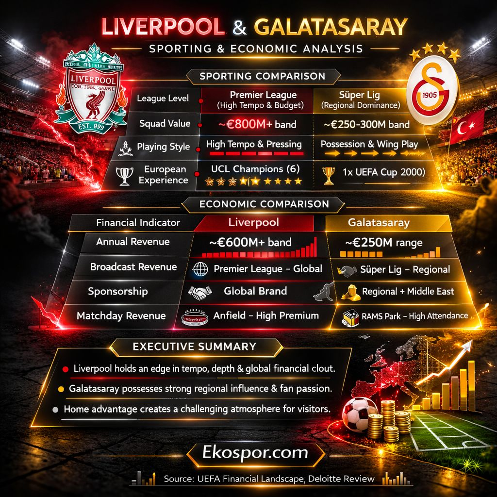

How league economics, media rights, and financial scale shape competitive performance in European football

Executive Brief | Sports Economics Perspective
The comparative analysis between Liverpool F.C. and Galatasaray S.K. illustrates how structural differences in league economics shape competitive performance in European football.
From a sporting perspective, Liverpool benefits from high-intensity competitive environment of Premier League, which supports deeper squads, higher tempo play, and greater international experience.
Galatasaray, competing in the Süper Lig, demonstrates strong regional dominance and one of the most influential home-field environments in European football.
From an economic standpoint, primary differentiator lies in financial scale.
Global broadcasting reach, commercial partnerships, and sponsorship ecosystems provide Premier League clubs with a significantly larger revenue base.
Financial scale drives sporting sustainability in European competitions.
League broadcasting architecture remains the core competitive differentiator.
Regional power and fan culture still provide strategic advantages for clubs like Galatasaray.
European football competitiveness is increasingly determined not only by sporting strategy but also by media rights structures, global brand expansion, and commercial integration.
In this context, strengthening the economic architecture of leagues remains critical for long-term competitive balance.
Source: UEFA Financial Landscape, Deloitte Football Review